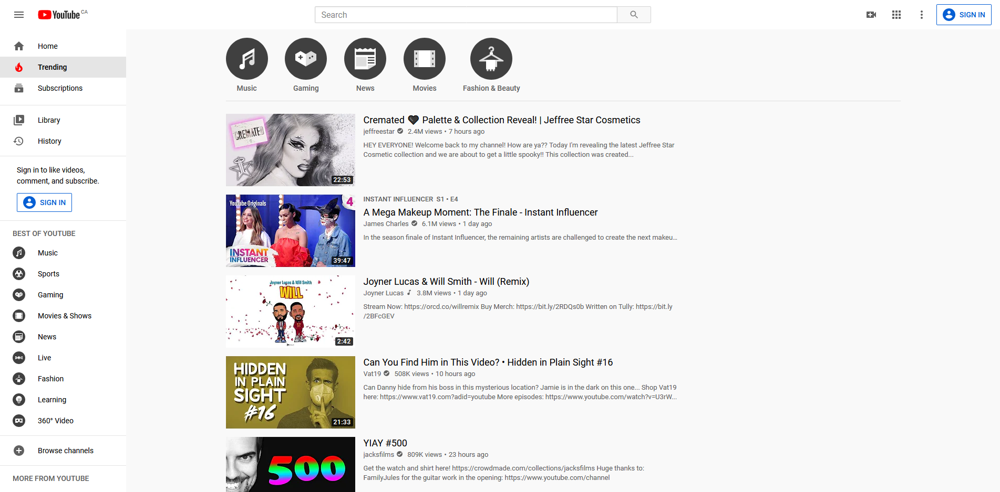

Survey
Please review the UI of Youtube's
trending
page:

Personal Information
First name:
Last name:
What is your gender?
Male
Female
Prefer not to say.
How often do you browse the trending page?
1 (Not Often)
2
3
4
5 (Often)
Please select ALL statements that you agree with.
I browse the trending page often.
The trending page is easy to navigate.
I watch multiple videos on the trending page in one sitting.
I have no issues with the trending page.
Question
Strong Disagree
Disagree
Neither
Agree
Strongly Agree
The UI does an effective job at capturing my attention.
I usually care about the content on the trending page.
I am more likely to share videos that are on the trending page.
I like the layout of the UI.
Any comments or suggestions on improving the UI?
Submit Questionnaire
Questionnaire created by Kenny Nguyen